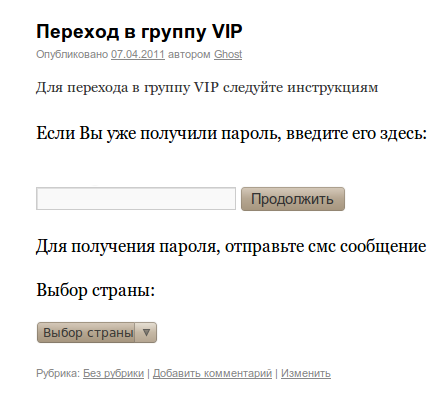
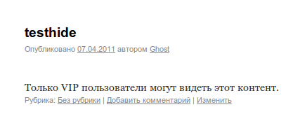
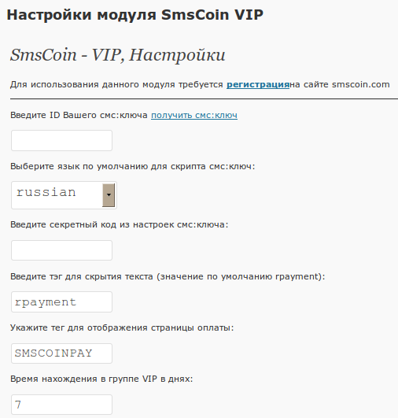

SmsCoin - модуль VIP на основе смс:ключа(для WordPress)посредством отправки смс-сообщения, на основе услуги смс:ключ.Вся информация, предоставленная в рамках данного программного продукта, принадлежит проекту SmsCoin и его владельцам. Данный программный продукт предназначен для участников партнерской программы сайта http://smscoin.com/ при использовании услуги СМС:КЛЮЧ. Использование программного продукта или его части вне обозначеной партнерской программы является нарушением прав компании и преследуется в соответствии с действующим законодательством. SmsCoin не несет никакой ответственности за функционирование данного программного обеспечения, а также за потерю прибыли, в том числе упущенную выгоду, и/или убытки, связанные с использованием данного программного обеспечения. |
Принцип работы модуля:Этот плагин позволяет обеспечить платный доступ к чему-либо на вашем сайте.В ответ на присланное смс-сообщение пользователю приходит короткий текстовый пароль (ключ), после активации которого пользователь переходит в группу VIP. Вы сами определяете страницу на котрой пользователь будет производить оплату для перехода в группу VIP указав в ней тег [SMSCOINPAY]. Вы так же определяете какие статьи вы хотите закрыть тегами [rpayment]. Вы можете сделать эмуляцию платной регистрации установив время пребывания в группе VIP (Vip Time) равной большому числу например 999999 дней. В этом случае пользователь оплатив статус VIP получает права на просмотр скрытого контента на все время существования существования сайта.При окончании времени нахождения в группе VIP пользователю письмо текст которого определяете вы (совет: В письме дайте ссылку на страницу оплаты). Пример (тег [SMSCOINPAY] ):  Пример (тег [rpayment]text[/rpayment] ):  Рекомендуется не использовать один модуль несколько раз на одной и той же странице. |
Установка:
Пример:  Настройка завершена!Удаление:Модуль удален. |